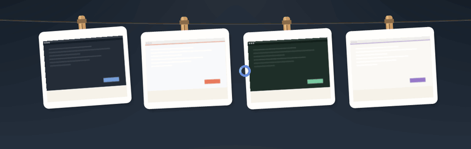

Windows · 开源 · MIT · 单文件 632 KB
截图，晾起来。
按下 Win+Shift+S 截完，图不会落到桌面，而是夹到屏幕顶端的 一根晾衣绳上。指针往上一搭，绳子带着一排相框滑下来；单击复制、拖进聊天框、 拖进文件夹；不要了松手扔进回收站。平时它只是屏幕边缘的一条细线。
v0.1.3 · 免安装、无需任何运行库 · 未签名，首次运行会被 SmartScreen 拦一下 → 三秒处理

三步，就完事
它不接管截图，只接管截图出现之后的那几十秒。
照常截图
用 Win+Shift+S 或 Win+PrintScreen，也可以从任何工具「复制到剪贴板」。
自动上墙
新截图瞬间夹到绳上，桌面和「下载」文件夹不再堆满 截图 2026-11-17 090411.png。
一伸手就有
单击＝复制，拖出＝发一份副本，双击＝看大图，长按＝丢进画图。用完自动收起，不用收拾。
为什么能这么轻
不套 Electron，不依赖 .NET、WebView2、Node.js——Rust + 纯 Win32/GDI+ 静态链接， 一个 exe 装下所有事。下面这组数字是同功能的上一代 Electron 版与它自己的实测对照， 口径为整棵进程树的工作集。
| 场景 | Electron v0.1.1 | 本项目 | 降幅 |
|---|---|---|---|
| 收起态、空收件箱 | 416.2 MB / 6 | 32.1 MB / 1 | −92.3% |
| 挂 10 张 1920×1080 | 505.0 MB / 6 | 33.6 MB / 1 | −93.3% |
| 峰值工作集 | 600.1 MB | 36.7 MB | −93.9% |
| 展开动画帧率 | — | 62–66 fps | 中位 63 |
采样口径：每 250 ms 读一次 PROCESS_MEMORY_COUNTERS_EX；60 分钟长稳采样句柄 525、
线程 14 恒定，无泄漏。长时间运行并调用过系统文件对话框后，工作集会上到 60 MB 左右并保持平稳
——那是 Windows Shell 扩展加载后常驻，不是泄漏。
手势一览
没有工具栏，没有菜单栏，全靠这几个动作。
- 停靠屏幕顶边 0.25 s晾衣绳滑下来（顶边中部约 56% 区域，避开最大化窗口的按钮）
- 指针离开自动收起，平时只是屏幕边缘的一条细线
- 单击相片复制到剪贴板（图片 + 文件同时写入）
- 双击相片用系统照片查看器打开
- 长按 0.45 s用画图（mspaint）编辑
- 拖出到应用发送一份副本，相片留在绳上
- 拖出到文件夹保存一份，相片留在绳上
- 右键复制 / 画图 / 打开 / 另存为 / 取下并保存 / 删除
- ✕ 或拖进回收站移入回收站，不是直接删掉
- Ctrl+Alt+T手动显示 / 收起晾衣绳
它不是什么
先把期待说清楚，省得你装了才发现少东西。
- 不是贴图工具（不是 Snipaste）
- 不做截图界面
- 不做 OCR
- 不做长截图
- 不做录屏
- 不做标注编辑器
它只解决一件事——截图出现之后的那几十秒：想用的时候一伸手就有，不用的时候看不见。 要标注，长按丢进系统画图；要深度编辑，Snipaste / PixPin 更合适； 要把截图长期归档，资源管理器更合适。
截图不外流，一个字节都不
没有账号，没有网络请求，没有统计上报。断网也能用，这一点你可以自己验。
-
不联网代码里没有任何 HTTP 客户端（
Cargo.toml零外部 crate），你可以直接用防火墙看它一个包都不发。 -
数据全在本机截图放在
%APPDATA%\图墙\inbox，卸载也不会删；要彻底清理，手动删这个目录即可。 -
不抢焦点悬停、点击晾衣绳都不会把你正在输入的窗口顶掉；全屏应用在前台时它自动隐身，不挡游戏和放映。
-
空白处点击穿透那条 210 px 高的窗口，只有相片本身接收鼠标；指针在空白处时，点击、滚轮、拖拽全部落到底下的窗口。
-
跨会话保留重启后相片还挂在绳上，直到你取下或删除。
便携版 SHA256（v0.1.3）
6226ab37bc85cd8d11ae0dd5908fb7567af6d2720c8790f8ffaa065d567a6554
Windows 自带 certutil -hashfile 文件名 SHA256 就能比对。
完整清单见 Release 里的 SHA256SUMS.txt。
常见问题
运行时报「Windows 已保护你的电脑」，是病毒吗？
不是，是因为 exe 没有买代码签名证书——一张 OV 证书一年几百到几千块，对一个免费开源的小工具来说不划算。 所有未签名的独立软件第一次运行都会遇到这个提示。
处理方式：点提示框里的「更多信息」→「仍要运行」，两次点击就好。
不放心可以先比对上面的 SHA256，或者直接 看源码
自己 cargo build --release。
如果被火绒、360 之类拦下来，多半是启发式误报，可以把文件加白，或者把文件提交给厂商做误报申诉。
和网上那个同名的「PicLine」是同一个软件吗？
不是。「PicLine / 图墙」这个名字在中文软件站上已经被另一款截图工具占用了，那款有标注编辑器、图片篮子等功能，和本项目没有关系。
本项目只从 GitHub 官方 Release 发布，下载请认准 github.com/zy2755/picline 的直链。 从网盘、软件站下的包可能被改过版本号甚至加壳，别用。
Windows 上还有好几个「截图晾衣绳」，为什么用这个？
创意不是它独有的——macOS 原版是 Tendedero， Windows 上还有 Snapline、PicRope／图绳、Pegline 等社区移植。
它不打功能竞赛，只把「轻」做到极致：不依赖任何运行时，一个 632 KB 的文件跑完所有事， 常驻 32 MB、单进程。同一台机器上，这比任何一个 .NET/WPF 或 Electron 实现都要小一到两个数量级。
支持多显示器和高 DPI 吗？
目前只完整验证过单屏 + 150% 缩放的环境。多显示器、混合 DPI（比如笔记本 2K 外接 1080p） 没有做穷尽测试，可能有贴边位置或尺寸的偏差。
只有 Windows x64 版本，没有 ARM64 / macOS / Linux 计划。
截图之后，原来的文件去哪了？
默认会从 图片\Screenshots 移进图墙的收件箱 %APPDATA%\图墙\inbox，
所以那个文件夹不会再堆积。在绳上右键「取下并保存」会放回 图片\Screenshots。
它只认启动之后的新内容：历史截图、云盘同步、你手动复制图片都不会被误收； 自己「单击复制」的图也不会被再挂一次。同图两条通道同时到达时只挂一次，并保留原始画质。
呼出区域和横带高度能改吗？
暂时不能。呼出区域固定在屏幕顶边中部约 56%（这样能避开最大化窗口右上角的按钮）， 横带高度 210 px 也是写死的。目前没有设置界面，只有托盘菜单里的开关（两条截图通道、开机自启、打开收件箱）。